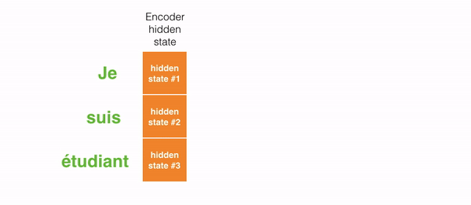

Transformer
Transformer是一类 神经网络 架构
Transformer 现在越来越受欢迎了，最近被OpenAI用于训练他们的语言模型 同时也被DeepMind的AlphaStar 采用，用于他们的程序击败那些顶级星际玩家
Transformer是为了解决 序列传导 问题或神经网络 机器翻译 而设计的，意味着任何需要将 输入序列 转换 为 输出序列 的任务都可以用，包括语音识别和文本到语音转换等
对于需要进行 序列传导 的模型，有必要有某种 记忆
例如，将以下句子翻译到另一种语言(法语): “The Transformers” are a Japanese [[hardcore punk]] band. The band was formed in 1968, during the height of Japanese music history” 本例中，第二句话中的“the band”一词指代第一句中引入的“The Transformers” 当读到第二句中的"the band"，你知道它指的是“The Transformers” band 这对翻译很重要。事实上，后一句话中的某个词指代前几句话中出现的某个词，像这样的例子很多
翻译这样的句子，模型需要找出之间的依赖和关联。 循环神经网络 RNNs 和 卷积神经网络 CNNs 由于其特性已被使用来解决这个问题。 首先来回顾一下这两种架构及其缺点
循环神经网络
循环神经网络内部有 循环 ，允许 信息 保存 其中

如上图所示，可以看到神经网络的一部分 \(A\)，处理 输入 \(x_t\)，然后 输出 \(h_t\) ， A处循环 使得 信息可从前一步传递至后一步
换一种方式思考这些循环：循环神经网络可认为是同一网络A的多重备份，每个网络将信息传递给其后续网络
看一下如果将循环展开会如何：
图中 链式 本质清楚地表明循环神经网络与序列和列表相关
如果以这种方式翻译一段文本，需要将文本中的每个单词设置为其输入 循环神经网络将序列中前面的词语的信息传入后一个神经网络，这样便可以利用和处理这些信息
下图展示了 sequence to sequence 模型通常是如何用循环神经网络工作的。每个单词被单独处理，然后将 编码阶段的隐状态 传入 解码阶段 以 生成 结果句子 ，然后这样就产生了输出

长期依赖的问题
考虑一下这类模型，即使用之前看到的单词预测下一个单词
如果需要预测这句话“the clouds in the ___”的下一个单词，不需要额外的语境信息，很显然下个单词是“sky” 这个例子里，相关信息和需预测单词的距离很近
循环神经网络可以学习前面的信息，并找出句中下一个单词：
但有些情况需要更多语境信息
例如试图预测这句话的最后一个单词: “I grew up in France… I speak fluent ___” 最靠近这个单词的信息建议这很有可能是一种语言，但当想确定具体是哪种语言时，需要语境信息France 而这出现在较前面的文本中

当相关信息和词语之间距离变得很大时，RNN变得非常低效。那是因为，需要翻译的信息经过运算中的每一步，传递链越长，信息就越可能在链中丢失
理论上RNN可以学习这些长期依赖关系，不过实践表现不佳，学不到这些信息 因而出现了LSTM，一种特殊的RNN，试图解决这类问题
Long-Short Term Memory (LSTM)
我们平时安排日程时，通常会为不同的约会确定不同的优先级 如果有什么重要行程安排，我们通常会取消一些不那么重要的会议，去参加那些重要的 RNN不会那么做。无论什么时候都会不断往后面加信息，它通过应用函数转换全部现有信息 在过程中所有信息都被修改了，它不去考虑哪些重要，哪些不重要
LSTMs 在此基础上利用 乘法 和 加法 做了一些小改进。在LSTMs里， 信息流 经一种机制称为 细胞状态 。LSTM便可以选择性的记忆或遗忘那些重要或不重要的事情了。LSTM内部看起来像是这样:
每个细胞的输入为 \(x_t\) (在句子到句子翻译这类应用中 \(x_t\) 是一个单词), 上一轮细胞状态以及上一轮的输出。模型基于这些输入计算改变其中信息，然后产生新的细胞状态和输出
这里不会详细讲每个细胞的实现机制，如果想了解这些细胞的运作机制，推荐看一下Christopher的博客: Understanding LSTM Networks -- colah's blog https://colah.github.io/posts/2015-08-Understanding-LSTMs/
这些循环使得循环神经网络看起来有点神秘。 但如果再细想一下，事实上采用细胞状态后，在翻译过程中，句子中对翻译单词重要的信息会被一轮一轮传递下去
LSTM的问题
总体来说问题LSTM的问题与RNN一样 例如当句子过长LSTM也不能很好的工作 原因在于保持离当前单词较远的上下文的概率以距离的指数衰减，那意味着当出现长句，模型通常会忘记序列中较远的内容 RNN与LSTM模型的另一个问题，由于不得不逐个单词处理，因此难以并行化处理句子。不仅如此，也没有长短范围依赖的模型
总之，LSTM和RNN模型有三个问题:
- 顺序计算，不能有效并行化
- 没有显示的建模长短范围依赖
- 单词之间的距离是线性的
Attention
为了解决其中部分问题，研究者建立了一项能对特定单词产生注意力的技能 当翻译一个句子，我会特别注意我当前正在翻译的单词 当我录制录音时，我会仔细聆听我正在写下的部分 如果你让我描述我所在的房间，当我这样做的时候，我会瞥一眼描述的物体 神经网络用attention可以做到同样的效果，专注于给出信息的那部分 例如，RNN可以会注意另一RNN的输出。在每个时点它聚焦于其他RNN不同的位置
注意力 attention 是一种用于神经网络的技术。 对于RNN模型，与其只编码整个句子的隐状态，可以把 每个单词的隐状态 一起传给 解码器阶段 。在RNN的每个步骤使用隐藏状态进行解码。详见下面动图
其背后的想法是句子每个单词都有相关信息。为了精确解码，需要用注意力机制考虑输入的每个单词
对于要放入序列传导RNN模型的注意力，分成 编码 和 解码 两步。一步以绿色（编码）表示，另一步以紫色（解码）表示。
绿色步骤负责由 输入 建立 隐状态 。把句子中每个单词产生的 所有 隐状态 传入 解码 阶段，而不是和过去一样，仅传递一个隐状态给解码器。每个隐状态都会在解码阶段被使用，去找出网络应该注意的地方。
比如，当翻译这句 “Je suis étudiant”法语句子到英语时，需要在翻译时解码步骤去查不同的单词

或再比如，当将“L’accord sur la zone économique européenne a été signé en août 1992.” 法语翻译成英语
下图展示了需要对每个输入赋予多少注意力：
不过前面讨论的一些问题，用带attention的RNN仍然无法解决 比如，不可能并行处理输入的单词，这对较大的文本语料，增加了翻译文本的用时